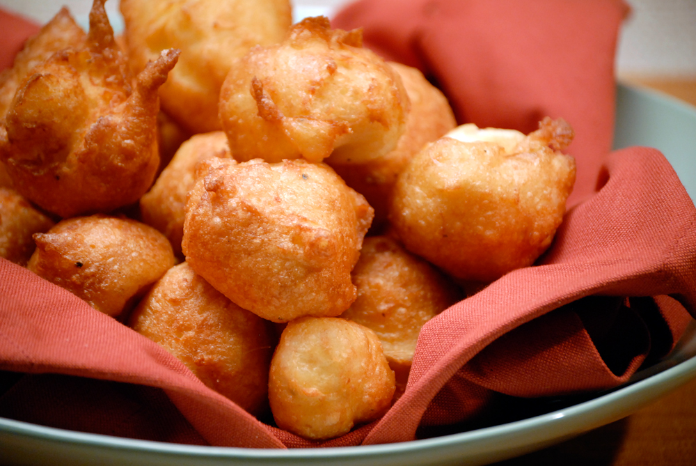

Potato Puff

Recipe by Chef Noshi
Ingredients
- Potato½ kg
- Eggs 2
- All purpose flour 2 tbsp
- Bread crumbs 6 tsp
- Salt and black pepper to taste
- Oil for deep fry
Cooking Instruction
- Peel and grate the potato.
- Mix in eggs, all purpose flour, bread crumbs, salt and black pepper.
- Heat oil in a wok and deep fry like fritters until golden.
- Serve with ketchup.